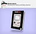
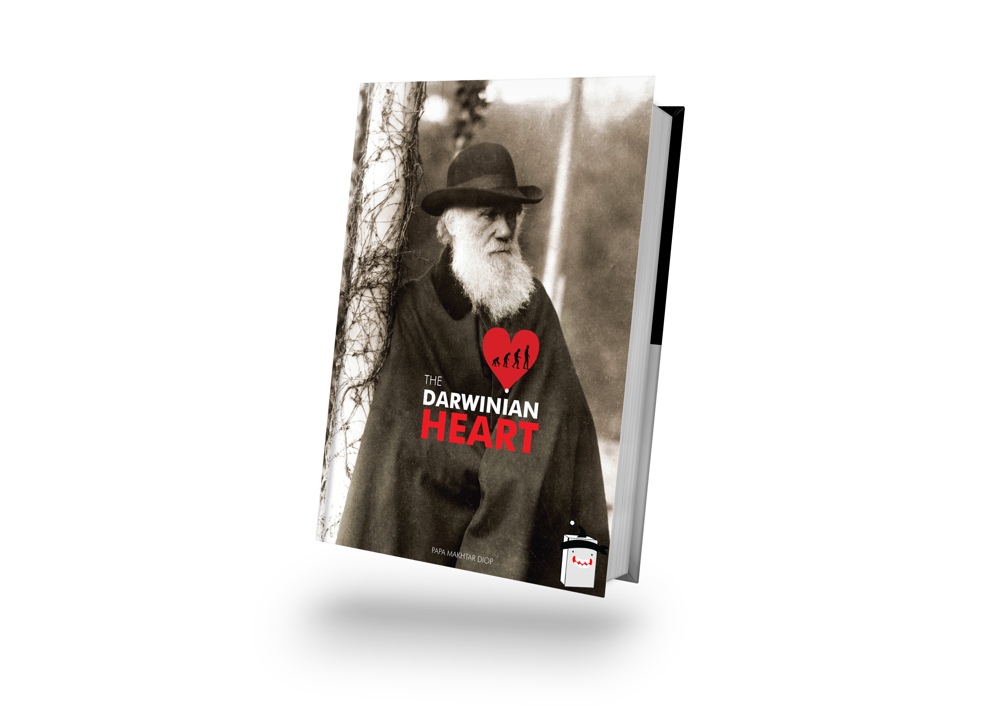

A mail-only startup

When Google started there was no way to reach them unless you really know the founders or one of the team members. They had no customer service or email address just this web page as frontend.
a landing page with form input for you to use and search what you need.
Now many think that they need websites, email addresses, social media accounts, video publishing platforms, saas software …. for launching a startup or a company.
In fact, all you need is to start and a unique way to communicate with the audience you are eager and engaged to serve and help.
I am about to launch Book Dojo a Book Publishing startup but this startup has no website and no domain name but use a unique way of communicating with the external world and this way is Email, this communication channel that puts forward the internet but that gets polluted by spammers and and hustling marketers. Because I think this channel is still worth a lot I decided to constrained Book Dojo, my new startup to only use this channel
Yes email is the only frontend to Book Dojo because we want to spend money for our readers and publisher,s not for our comfort, our taste, or tech products passion and sincerely Book Dojo now cannot afford the cost of a website and all these tech stacks that go with it and Starting a startup with constraints is better than starting it with millions of dollar from venture capitalists. Constraints edge our way of finding solutions and making things better and Book Dojo seeks solutions to make book publishing and Reading Experience better. There are a lot of solutions that we have incubated in a constrained environment that we are going to experiment in real and for sure it will never work without you because it is for you who believe that Books are still the most important medium for gathering knowledge and skills and for seeing things as they are without bias.
If you do care about books I highly recommend you to participate in Book Dojo and to see your status increase as your participation lifetime increase and I hope everybody a long and happy life. A life of focus and knowledge that make all the difference and help achieve all of our goals.
I said mail only startup because I consider Direct mail and Electronic Mail when I say Mail. Yes if you hear from Book dojo it will be by Email or by a letter in your office or home letterbox because there are these only two channels that book Dojo is considering now as a way of communication with the world.
The second constraint of Book Dojo is that we only published at this time Hardcover Book and we are not active in Ebook. If one day you consume a book from Book Dojo in the eBook Format it will be because you got it from someone who already has a hardcover or someone who just scanned one convert it into an ebook without our permission
To get the first touch with Book Dojo provide us your email by filling this form
PS: my book Gamestop, anatomy of a stock short bubble will be published with the Book Dojo’s Flag

